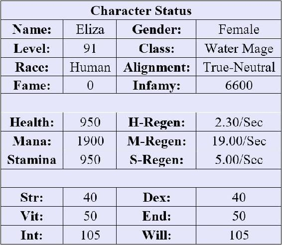

Eliza stood outside of Lord Baen’s office. She was stalling, and she knew it. After storming away from the Hippie, she had logged out for the evening. She just hadn’t been able to handle… well, everything. Not that she was in much better shape now. She still felt a worm of guilt wriggling in her stomach every time she thought about the farm.
Her eyes rested on the door to the merchant’s office. She wasn’t certain what to expect from this encounter, but, after dealing with the Hippie for so long, she suspected that this conversation wouldn’t be simple. Nothing ever was.
With a sigh, she decided to pull up her character sheet – which would put off the inevitable conversation with Lord Baen for a little bit longer.
| x18 Level Up! |
| You have (150) undistributed stat points. |
x2 Skill Rank Up: Cold Grasp
Skill Level: Intermediate Level 4
Effect 1: Increases radius by 14%
Effect 2: Increases damage by 4%
x4 Skill Rank Up: Herbalism
Skill Level: Intermediate Level 6
Effect 1: Allows the player to harvest more difficult or dangerous plants. 8% chance for double ingredients.
Effect 2: Low-to-mid level ingredients appear on the map and are highlighted.
x1 Skill Rank Up: Alchemy
Skill Level: Intermediate Level 5
Effect 1: Increases success chance of crafting potions and potion potency by 15%.
Effect 2: Reduces ingredient consumption by 4.5%.
x5 Skill Rank Up: Accelerated Growth
Skill Level: Beginner Level 6
Effect: Accelerated plant growth. The growth rate increases with your skill level.
Cost: 47.5 mana/second.
x5 Skill Rank Up: Obscuring Mist
Skill Level: Intermediate Level 1
Effect 1: Increased range and fog density by 10%.
Effect 2: Increased mist control.
Apparently, the game had given her credit for every farmer and guard killed by the mold – at least that was the only way she could explain her dramatic level and skill increases. That was just a final twist of the knife for what she had done, but she supposed that there was no way to rewind the clock at this point.
She also had a ton of stat points to distribute, but she wasn’t quite certain yet how to allocate them. Eliza had noticed that statistics like Strength and Endurance helped quite a bit with most practical activities in AO, but she could certainly use more mana and higher mana regeneration. A little more mana would have helped quite a bit in that last encounter.
With a flick of her wrist, she brought up her character status.

It was hard to believe that she had only started playing a few short weeks ago. From what she could tell from reading the forums online, she was quite advanced compared to most players. Although, she doubted that many people laid poisonous traps to kill other players or created mutant molds that could take out a town.
Which brought her attention back to the office door standing in front of her. She was still stalling, but there was no point in putting off this conversation any longer. She may as well rip off the band-aid so she could get back to Alma’s garden.
With a final sigh, Eliza knocked tentatively on the door and entered when she heard Lord Baen call out. She found the older merchant sitting behind his deck, his eyes skimming a weathered piece of parchment. He looked up at Eliza as she entered, and she noticed him do a double take – perhaps not expecting her. She detected a strange emotion flit across his face for the briefest of moments. It almost looked like… fear.
But that couldn’t be right.
“Ahh, Eliza,” Lord Baen said, regaining his composure and mustering his face into a smile. “It’s a pleasure as always. Why don’t you take a seat?” He gestured at the chair across from his desk.
Eliza sat down quickly, not certain how to begin their conversation.
The merchant saved her from making small talk. He coughed into his sleeve and glanced at her furtively. “So, I expect you are here to talk about Tollhouse Farm.”
“Yes,” Eliza said, nodding curtly.
“My spies reported back on the status of the farm,” Lord Baen began in a cautious voice, setting down his parchment and pulling off his glasses as he inspected her closely. “What... what happened?”
Eliza bit her lip as she considered what she wanted to tell the lord. “Things got out of hand,” she said quietly. “I created a mold that could eat through the wooden buildings, expecting that this would destroy the compound but the residents would live.” She hesitated slightly before continuing, her eyes fixed firmly on her hands in her lap, where they twined together in a nervous pattern. “The mold turned out to be more aggressive than I expected.”
Lord Baen leaned forward, his eyes focused on Eliza. “A mold you say? What about the fire?”
She nodded quickly. “I was forced to destroy the fungus to keep it from spreading further. I…” she began but stopped herself. There was really no need to explain anything further – like how she had barely saved the entire zone from being overrun by a mutant mold. Or the fact that they wouldn’t be having this conversation if she hadn’t burned the farm to the ground.
“Interesting, interesting,” Lord Baen murmured. “I could think of several extremely useful applications for this mold if you would be interested in entertaining another small task. Think of the applications with a ship at sea…”
“No,” Eliza interjected harshly, raising her eyes to glare at the older man before she could stop herself. She would not be responsible for creating a biological weapon in-game – at least, not again. As she saw the lord’s shocked reaction, she tried to pull back a bit, her eyes dropping to the table. “That was the only sample I had, and I’m sure I wouldn’t be able to recreate it.”
“Ahh, well that’s that then,” the merchant said slowly, but she could see out of the corner of her eye that his expression was skeptical. Eliza also couldn’t help but notice that his hand had drifted below the table when she snapped at him. Was he grabbing at a weapon? Was he really that afraid of her now?
“In any event, you accomplished my task,” Lord Baen said, both his hands resurfacing above the table. “The smuggling operation has definitely been stopped, and I don’t see Lord Cairn risking something like that again soon. Not after he sees the state of the farm…” the merchant trailed off, suddenly looking nervous again.
“You have my thanks,” he finally said. As Lord Baen finished speaking, another notification crashed down in front of Eliza.
| Quest Completed: Merchant’s Quandary |
|
You not only stopped Lord Cairn’s possible smuggling operation, you completely leveled Tollhouse Farm – sending a clear message to Lord Baen’s enemies. That wasn’t your objective, but when life gives you lemons… Actually, you would probably turn them into some kind of giant fruit monster that eats babies. Nevermind. Please stay away from lemons!
Difficulty: A Success: Put a stop to the flow of contraband goods. Failure: Ignore Lord Baen’s thinly-veiled threat. Reward: Avoid having Lord Baen reveal that you have been killing the local townspeople and players for fun. Yay?
|
Her eyes skimmed the prompt quickly. She detected the Hippie’s influence in these notifications. Yet her gaze lingered on the reward – or lack thereof. Had she really gone through all of this for nothing? She had spent most of her remaining funds on the materials to craft the salve for the sheep and the enhancement potions, and she would need to reimburse Alma for the materials she had used when experimenting with the mold as well as the mare and the wagon. In short, she was broke again.
“About my reward,” Eliza began.
Lord Baen’s eyes widened almost imperceptibly, and his mouth pinched into a line. “I thought we agreed that my discretion was a reward in itself.”
A flash of anger overrode Eliza’s naturally tentative nature. Was he really going to shake her down even after everything she had gone through? Two could play at that game. She hadn’t missed the way the merchant shifted nervously in his seat or how he hesitated to describe the destruction of the farm.
She knew what Alma would do in this situation.
Eliza met the older man’s gaze evenly, her eyes flashing sapphire as she inadvertently channeled her mana. “While I appreciate you keeping your opinions to yourself, I think some other form of payment would be appropriate. For example, as you suggested, we wouldn’t want anything untoward to happen to your remaining fleet.”
Lord Baen choked slightly and glanced at her angrily. Eliza continued before he could reply, “Besides, I can’t help but wonder what the travelers and townsfolk would think if you really were to claim that I was this Ice Witch. A young water mage and a fledgling alchemist? This seems far beyond my modest abilities.”
A long silence followed this statement, Lord Baen refusing to meet her gaze.
Then the merchant grimaced, clearly chewing on her words. However, he made no move to contradict her, which she took as a good sign. Suddenly, a broad smile broke across the man’s face. “I can only admire a woman with a strong intellect and a stiff spine. It seems Alma has taught you well.” He sighed. “As to funds, I find myself a little underwater at the moment – so to speak. However, I could offer you some employment around town if you’re interested.”
“What kind of employment?” Eliza questioned with a raised eyebrow.
“Nothing like Tollhouse Farm,” Lord Baen amended quickly as he saw her expression. “Unless you prefer to handle such work, of course. I was actually thinking of smaller and more mundane tasks. Our house may not be what it once was, but I do still have some connections.”
As Eliza waited for him to continue, he shifted nervously in his seat. “For example,” he began, “I know that Tegan at The Seaman’s Folly has been having trouble with our ship crews getting into fights with Lord Cairn’s men. Someone with your particular skill set might be invaluable in resolving these brawls, and you could earn some easy coin.”
Eliza pondered on this for a moment. Sitting in a tavern would give her a chance to work on her alchemy skills while still making money. Besides, there was probably a limit to how much trouble she could get into by simply keeping the peace. She could likely use her Obscuring Mist to take care of any unruly sailors while still keeping a low profile. No one needed to know where the mists came from after all.
“That sounds reasonable,” Eliza said with a nod.
A grin split Lord Baen’s face. “Fantastic. Then I believe we have an arrangement.” He offered a hand to the water mage, a symbolic gesture to seal their deal.
She eyed his hand for a moment before accepting it. She still didn’t trust Lord Baen, but as long as she was being cautious, she doubted that he would be able to pull something over on her again.
Having reached an agreement, Eliza made a hasty retreat from the office. As she stepped outside and the doors clicked shut behind her, she leaned back against the wall. Her heart was beating rapidly in her chest, and she felt like she had just run a marathon. That little confrontation had taken a lot out of her.
“Maybe I’m just really bad at this,” she murmured, wishing that she had brought Alma along to help her. The older woman probably could have gotten a few more concessions out of the merchant.
At least she had these little odd jobs to look forward to. They seemed simple after everything else she had gone through and might help to take her mind off of what had happened at Tollhouse Farm. Besides, how much trouble could she really get into working at a tavern?